Toun28 Main VMD툴에28 메인 VMD
A transparent display that lets the packaging carry the argument.패키지가 직접 말하게 하는 투명 디스플레이.

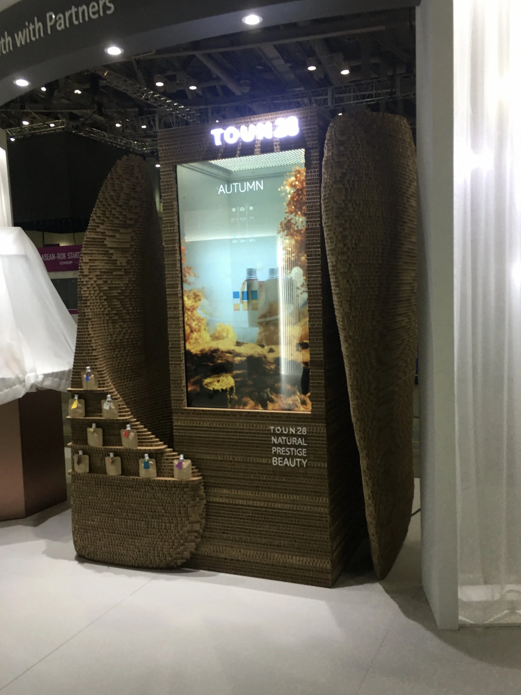
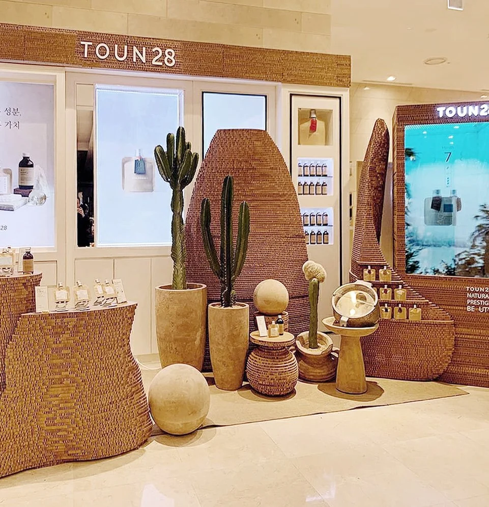
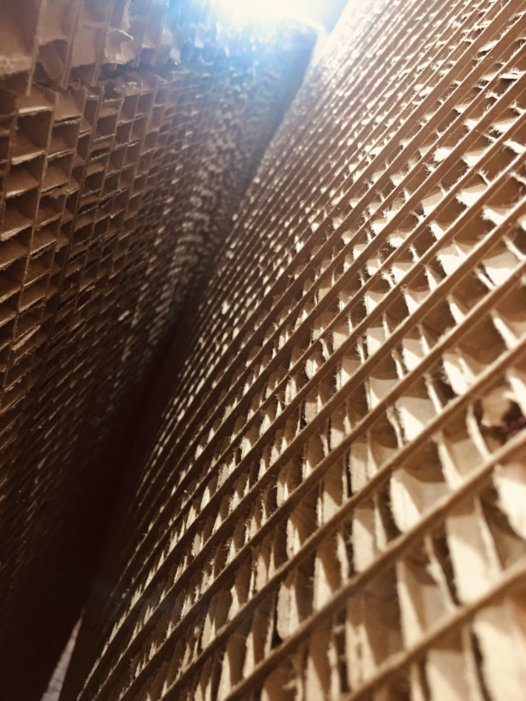
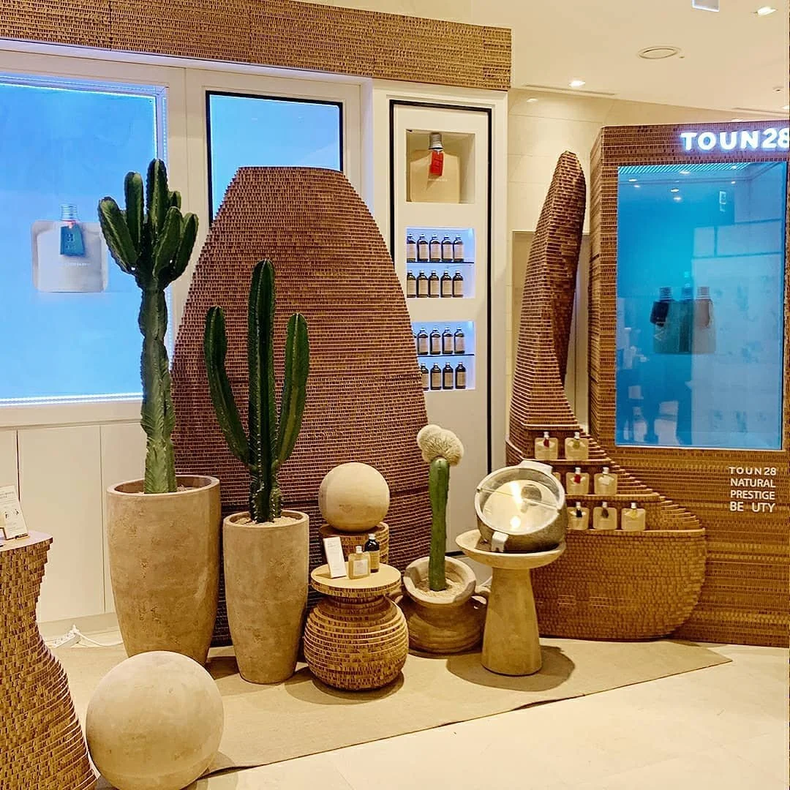
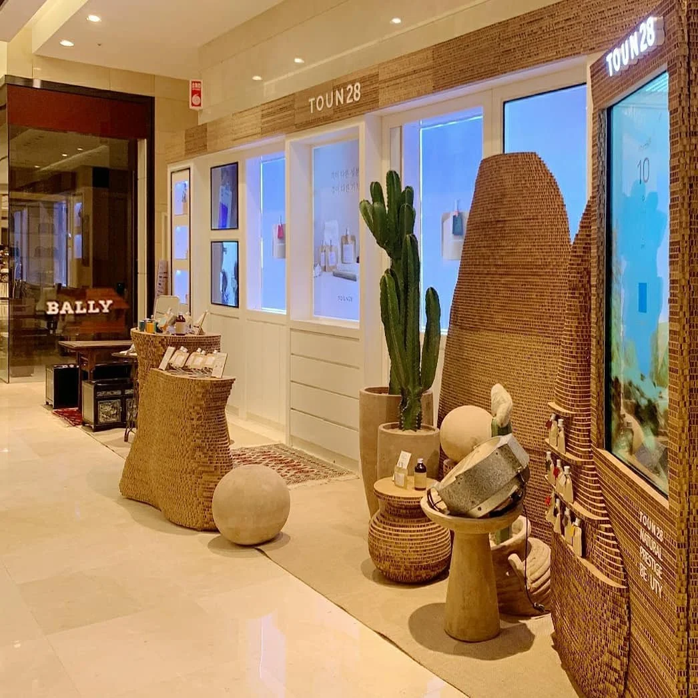
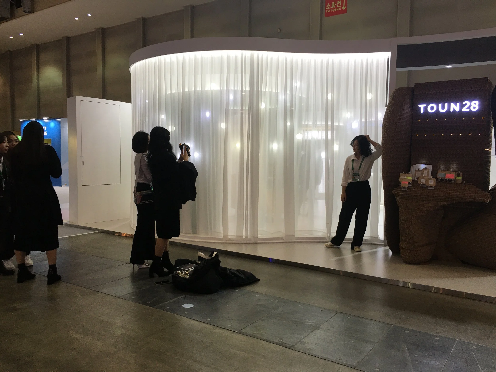
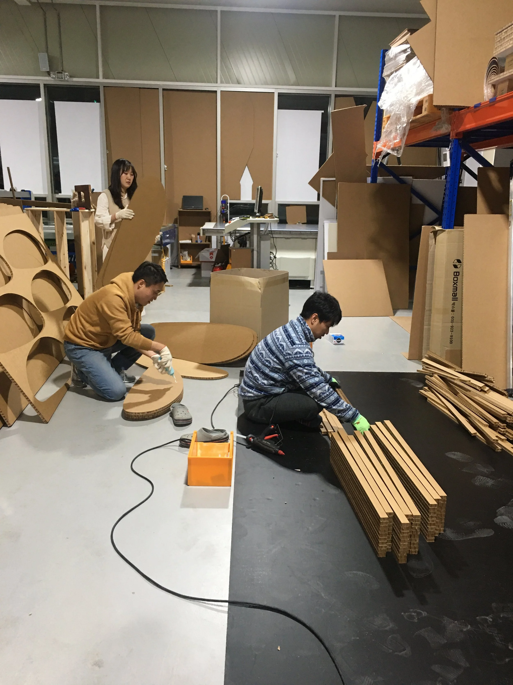
- Client클라이언트
- Toun28툴에28
- Location장소
- Seoul, Korea서울
- Year연도
- 2019–20202019–2020
- Role역할
- Art Director아트 디렉터
- Scope범위
- Creation and production of the brand’s primary VMD브랜드 메인 VMD 기획 및 제작
Toun28 makes zero-waste skincare, and its retail presence had to make that legible without a paragraph of explanation.
제로웨이스트 스킨케어라는 사실을 긴 설명 없이 읽힐 수 있게 만드는 것이 과제였습니다.
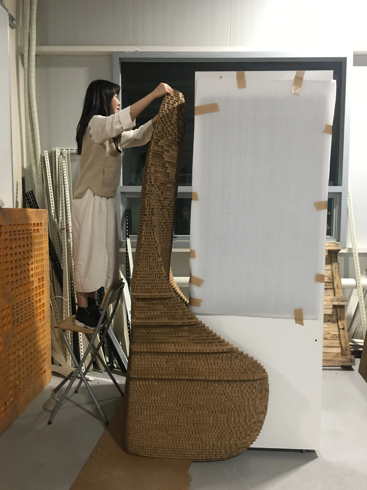
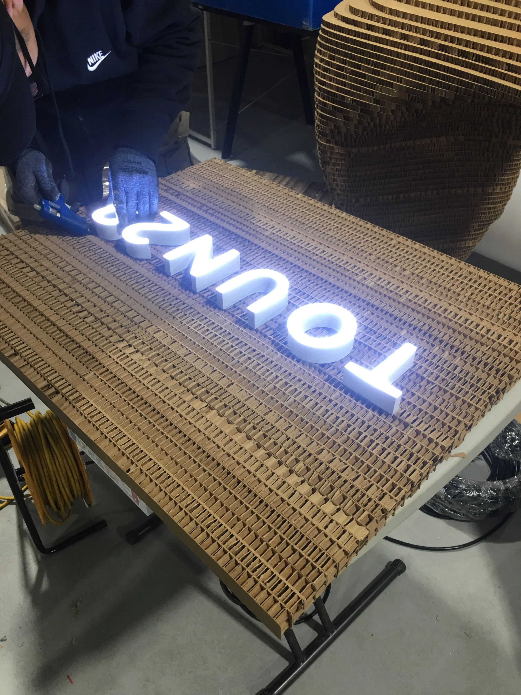
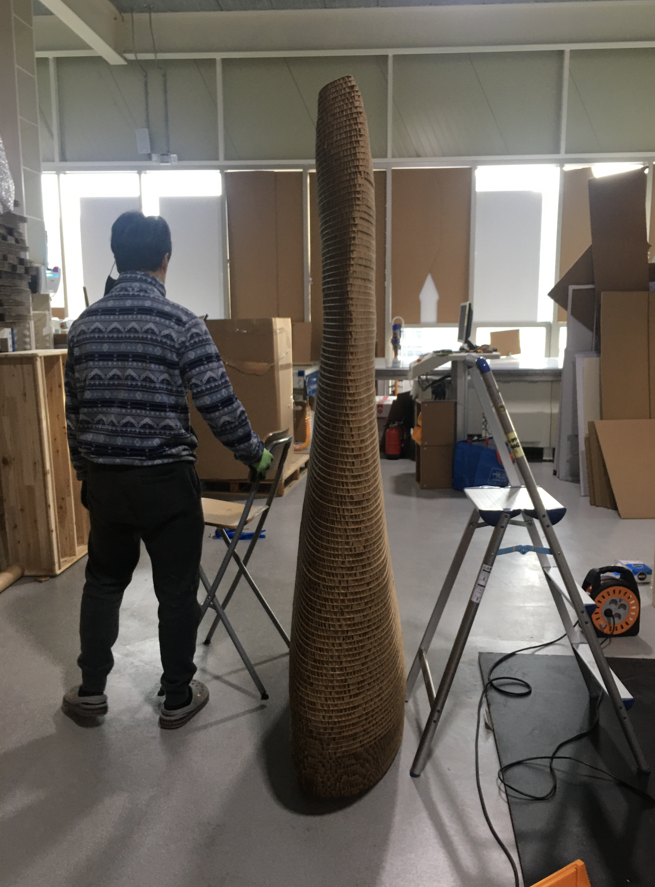
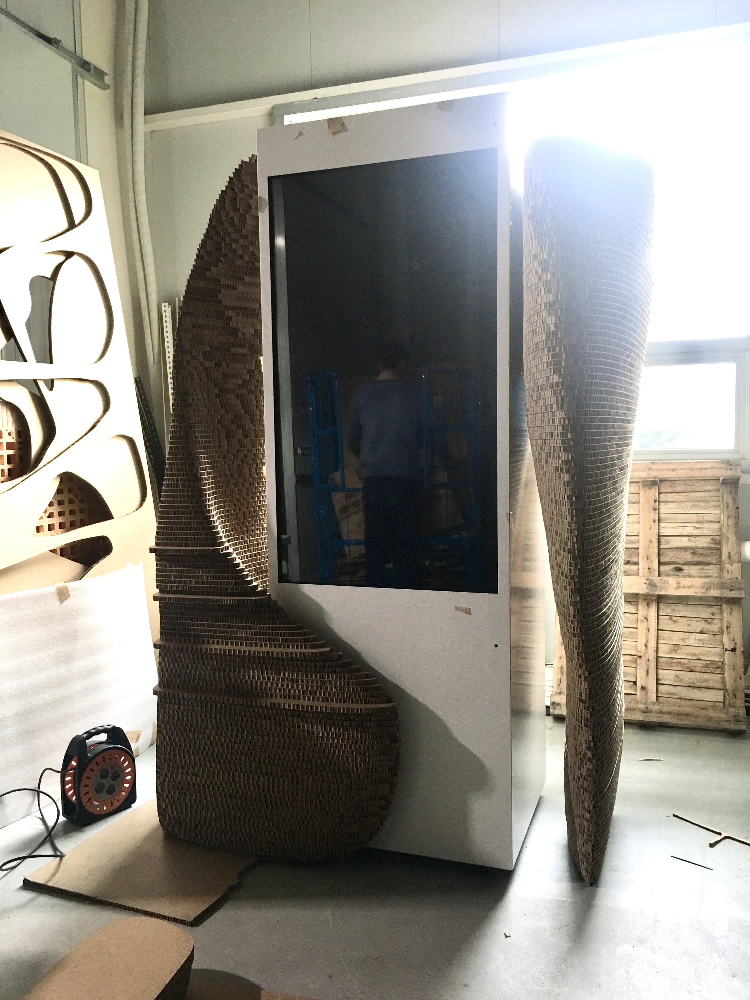
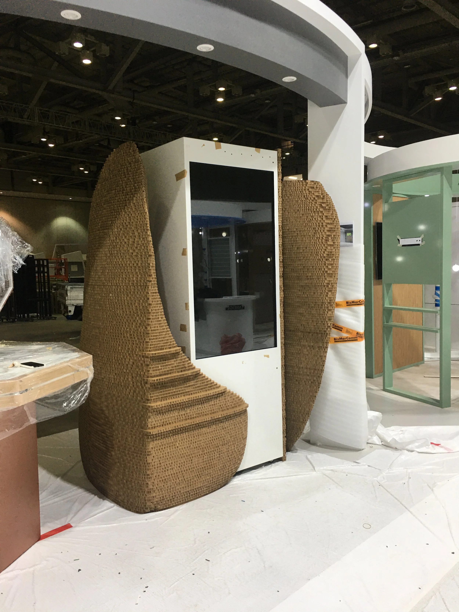
Legible without a paragraph of explanation.설명 없이 읽히도록.